CODING AGENTS AS PIXEL WORLD MODELS
traex/DeepSeek-V4.1-Flash · 0122
点击播放 · 原生 RGB 像素
逐轮保存的候选
回放视频、检查图与代码变化。
每份候选均可单独播放。实际图片检查记录在下方工具轨迹中。
候选 01播放与检查图
点击播放 · 原生 RGB 像素

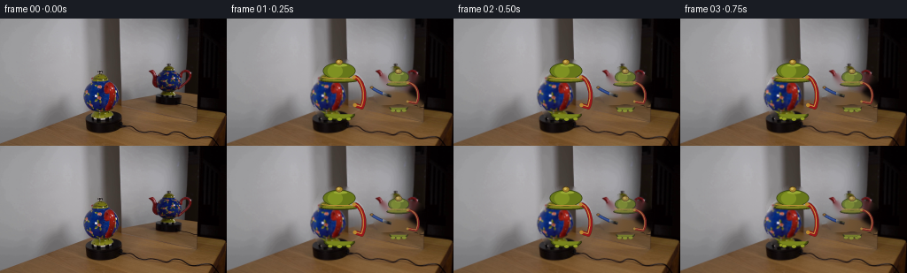
展开代码变化
--- 上一保存版本
+++ 本次保存版本
@@ -0,0 +1,558 @@
+from __future__ import annotations
+
+import math
+from pathlib import Path
+
+import cv2
+import numpy as np
+from PIL import Image, ImageDraw, ImageFilter
+
+import artifact_io
+
+
+CASE_DIR = Path(__file__).resolve().parent
+WIDTH, HEIGHT, FPS, FRAME_COUNT = 256, 144, 4, 20
+SUPERSAMPLE = 4
+
+
+def _polygon_mask(shape: tuple[int, int], points: list[tuple[int, int]]) -> np.ndarray:
+ mask = np.zeros(shape, dtype=np.uint8)
+ cv2.fillPoly(mask, [np.asarray(points, dtype=np.int32)], 255)
+ return mask
+
+
+def _inpaint_background(source: np.ndarray) -> np.ndarray:
+ mask = np.zeros((HEIGHT, WIDTH), dtype=np.uint8)
+ mask = cv2.bitwise_or(
+ mask,
+ _polygon_mask(
+ (HEIGHT, WIDTH),
+ [
+ (123, 44), (136, 46), (148, 55), (155, 65), (159, 78),
+ (159, 101), (151, 111), (143, 116), (110, 116), (101, 108),
+ (97, 93), (97, 68), (105, 52),
+ ],
+ ),
+ )
+ mask = cv2.bitwise_or(
+ mask,
+ _polygon_mask(
+ (HEIGHT, WIDTH),
+ [
+ (187, 55), (202, 61), (214, 63), (221, 66), (225, 79),
+ (224, 95), (215, 101), (210, 104), (180, 104), (174, 98),
+ (168, 92), (163, 83), (165, 73), (175, 63), (182, 57),
+ ],
+ ),
+ )
+ return cv2.inpaint(source, mask, 5, cv2.INPAINT_TELEA)
+
+
+def _clean_body_texture(source: np.ndarray, handle_boxes: list[tuple[int, int, int, int]]) -> np.ndarray:
+ mask = np.zeros((HEIGHT, WIDTH), dtype=np.uint8)
+ for x0, y0, x1, y1 in handle_boxes:
+ cv2.rectangle(mask, (x0, y0), (x1, y1), 255, -1)
+ return cv2.inpaint(source, mask, 4, cv2.INPAINT_TELEA)
+
+
+def _profile_radius(profile: list[tuple[float, float]], t: float) -> float:
+ t = float(np.clip(t, 0.0, 1.0))
+ ts = np.asarray([p[0] for p in profile], dtype=np.float32)
+ rs = np.asarray([p[1] for p in profile], dtype=np.float32)
+ return float(np.interp(t, ts, rs))
+
+
+BODY_PROFILE = [
+ (0.00, 0.35), (0.05, 0.55), (0.12, 0.73), (0.21, 0.87),
+ (0.32, 0.96), (0.45, 1.00), (0.58, 1.00), (0.70, 0.97),
+ (0.82, 0.89), (0.92, 0.74), (1.00, 0.53),
+]
+
+
+class TeapotGeometry:
+ def __init__(
+ self,
+ cx: float,
+ body_top: float,
+ body_bottom: float,
+ radius: float,
+ lid_top: float,
+ lid_bottom: float,
+ lid_radius: float,
+ foot_y: float,
+ foot_radius: float,
+ handle_bulge: float,
+ spout_length: float,
+ handle_phase: float,
+ spout_phase: float,
+ tube_scale: float,
+ ) -> None:
+ self.cx = cx
+ self.body_top = body_top
+ self.body_bottom = body_bottom
+ self.radius = radius
+ self.lid_top = lid_top
+ self.lid_bottom = lid_bottom
+ self.lid_radius = lid_radius
+ self.foot_y = foot_y
+ self.foot_radius = foot_radius
+ self.handle_bulge = handle_bulge
+ self.spout_length = spout_length
+ self.handle_phase = handle_phase
+ self.spout_phase = spout_phase
+ self.tube_scale = tube_scale
+
+ @property
+ def height(self) -> float:
+ return self.body_bottom - self.body_top
+
+ def body_radius(self, y: float) -> float:
+ t = (y - self.body_top) / self.height
+ if t < 0.0 or t > 1.0:
+ return 0.0
+ return self.radius * _profile_radius(BODY_PROFILE, t)
+
+
+ACTUAL = TeapotGeometry(
+ cx=127.0,
+ body_top=57.5,
+ body_bottom=108.0,
+ radius=30.0,
+ lid_top=45.5,
+ lid_bottom=69.5,
+ lid_radius=21.0,
+ foot_y=109.0,
+ foot_radius=17.5,
+ handle_bulge=1.13,
+ spout_length=1.78,
+ handle_phase=math.radians(75.0),
+ spout_phase=math.radians(-165.0),
+ tube_scale=1.0,
+)
+
+REFLECTION = TeapotGeometry(
+ cx=194.0,
+ body_top=67.0,
+ body_bottom=100.5,
+ radius=18.0,
+ lid_top=56.0,
+ lid_bottom=74.0,
+ lid_radius=13.4,
+ foot_y=101.0,
+ foot_radius=10.5,
+ handle_bulge=1.56,
+ spout_length=1.90,
+ handle_phase=math.radians(66.0),
+ spout_phase=math.radians(-114.0),
+ tube_scale=0.62,
+)
+
+
+def _shade_sampled_body(
+ sampled: np.ndarray,
+ q_out: np.ndarray,
+ q_src: np.ndarray,
+ behind: np.ndarray,
+) -> np.ndarray:
+ shade_src = 0.50 + 0.50 * np.sqrt(np.clip(1.0 - q_src * q_src, 0.0, 1.0))
+ shade_out = 0.59 + 0.41 * np.sqrt(np.clip(1.0 - q_out * q_out, 0.0, 1.0))
+ albedo = sampled / np.maximum(shade_src[..., None], 0.22)
+ color = albedo * shade_out[..., None]
+ color *= np.where(behind, 0.72, 1.0)[..., None]
+ rim = np.exp(-((np.abs(q_out) - 0.93) / 0.08) ** 2)
+ color += rim[..., None] * np.asarray([5.0, 7.0, 8.0])
+ return np.clip(color, 0.0, 255.0)
+
+
+def _paint_body(
+ canvas: np.ndarray,
+ texture: np.ndarray,
+ geom: TeapotGeometry,
+ rotation: float,
+) -> None:
+ s = SUPERSAMPLE
+ h, w = canvas.shape[:2]
+ y0 = max(0, int((geom.body_top - 2) * s))
+ y1 = min(h, int((geom.body_bottom + 2) * s) + 1)
+ x0 = max(0, int((geom.cx - geom.radius - 3) * s))
+ x1 = min(w, int((geom.cx + geom.radius + 3) * s) + 1)
+ if x1 <= x0 or y1 <= y0:
+ return
+
+ yy, xx = np.mgrid[y0:y1, x0:x1].astype(np.float32)
+ x = xx / s
+ y = yy / s
+ t = (y - geom.body_top) / geom.height
+ radius = geom.radius * np.interp(
+ t,
+ [p[0] for p in BODY_PROFILE],
+ [p[1] for p in BODY_PROFILE],
+ )
+ radius = np.where((t >= 0.0) & (t <= 1.0), radius, 0.0)
+ q = np.divide(x - geom.cx, radius, out=np.zeros_like(x), where=radius > 0.5)
+ inside = (radius > 0.5) & (np.abs(q) <= 1.0)
+ q = np.clip(q, -1.0, 1.0)
+ phi = np.arcsin(q)
+ theta = phi - rotation
+ q_src = np.sin(theta)
+ x_src = geom.cx + geom.radius * np.interp(
+ t,
+ [p[0] for p in BODY_PROFILE],
+ [p[1] for p in BODY_PROFILE],
+ ) * q_src
+ y_src = y
+
+ map_x = x_src.astype(np.float32)
+ map_y = y_src.astype(np.float32)
+ sampled = cv2.remap(
+ texture,
+ map_x,
+ map_y,
+ interpolation=cv2.INTER_LINEAR,
+ borderMode=cv2.BORDER_REPLICATE,
+ ).astype(np.float32)
+ behind = np.cos(theta) < 0.0
+ color = _shade_sampled_body(sampled, q, q_src, behind)
+ alpha = inside.astype(np.float32)
+
+ patch = canvas[y0:y1, x0:x1].astype(np.float32)
+ a = alpha[..., None]
+ blended = patch.copy()
+ blended[..., :3] = patch[..., :3] * (1.0 - a) + color * a
+ canvas[y0:y1, x0:x1] = np.clip(blended, 0.0, 255.0).astype(np.uint8)
+
+
+def _to_pil(canvas: np.ndarray) -> Image.Image:
+ return Image.fromarray(canvas)
+
+
+def _from_pil(image: Image.Image) -> np.ndarray:
+ return np.array(image.convert("RGBA"), dtype=np.uint8, copy=True)
+
+
+def _bezier(points: list[tuple[float, float]], steps: int = 24) -> list[tuple[float, float]]:
+ p = np.asarray(points, dtype=np.float32)
+ t = np.linspace(0.0, 1.0, steps, dtype=np.float32)[:, None]
+ omt = 1.0 - t
+ out = (
+ omt**3 * p[0]
+ + 3.0 * omt**2 * t * p[1]
+ + 3.0 * omt * t**2 * p[2]
+ + t**3 * p[3]
+ )
+ return [(float(v[0]), float(v[1])) for v in out]
+
+
+def _draw_tube(
+ draw: ImageDraw.ImageDraw,
+ points: list[tuple[float, float]],
+ width: float,
+ outline: tuple[int, int, int, int],
+ fill: tuple[int, int, int, int],
+ highlight: tuple[int, int, int, int],
+) -> None:
+ pts = [(round(x), round(y)) for x, y in points]
+ draw.line(pts, fill=outline, width=max(1, round(width + 2.4)), joint="curve")
+ draw.line(pts, fill=fill, width=max(1, round(width)), joint="curve")
+ hi = [(round(x - width * 0.16), round(y - width * 0.20)) for x, y in points]
+ draw.line(hi, fill=highlight, width=max(1, round(width * 0.25)), joint="curve")
+
+
+def _radial_projection(
+ geom: TeapotGeometry,
+ theta: float,
+ radial_multiplier: float,
+ y: float,
+ s: int,
+) -> tuple[float, float]:
+ radius = geom.body_radius(y)
+ x = geom.cx + radius * radial_multiplier * math.sin(theta)
+ return x * s, y * s
+
+
+def _draw_spout(
+ draw: ImageDraw.ImageDraw,
+ geom: TeapotGeometry,
+ rotation: float,
+) -> None:
+ s = SUPERSAMPLE
+ theta = geom.spout_phase - rotation
+ y_base = geom.body_top + geom.height * 0.62
+ p0 = _radial_projection(geom, theta, 0.52, y_base, s)
+ p1 = _radial_projection(geom, theta, 0.95, y_base - geom.height * 0.05, s)
+ p2 = _radial_projection(geom, theta, geom.spout_length * 0.80, y_base - geom.height * 0.16, s)
+ p3 = _radial_projection(geom, theta, geom.spout_length, y_base - geom.height * 0.29, s)
+ pts = _bezier([p0, p1, p2, p3])
+ width = 4.8 * geom.tube_scale * s
+ _draw_tube(
+ draw,
+ pts,
+ width,
+ (4, 13, 37, 255),
+ (22, 54, 139, 255),
+ (55, 94, 175, 255),
+ )
+ tip_x, tip_y = pts[-1]
+ r = 3.2 * geom.tube_scale * s
+ draw.ellipse(
+ (tip_x - r, tip_y - r * 0.7, tip_x + r, tip_y + r * 0.7),
+ fill=(181, 121, 36, 255),
+ outline=(69, 42, 18, 255),
+ width=max(1, round(0.8 * s)),
+ )
+
+
+def _draw_handle(
+ draw: ImageDraw.ImageDraw,
+ geom: TeapotGeometry,
+ rotation: float,
+) -> None:
+ s = SUPERSAMPLE
+ theta = geom.handle_phase - rotation
+ top = geom.body_top + geom.height * 0.18
+ bottom = geom.body_bottom - geom.height * 0.20
+ mid = (top + bottom) * 0.5
+ p0 = _radial_projection(geom, theta, 0.67, top, s)
+ p1 = _radial_projection(geom, theta, geom.handle_bulge * 0.92, top - geom.height * 0.05, s)
+ p2 = _radial_projection(geom, theta, geom.handle_bulge, mid, s)
+ p3 = _radial_projection(geom, theta, geom.handle_bulge * 0.92, bottom + geom.height * 0.05, s)
+ p4 = _radial_projection(geom, theta, 0.68, bottom, s)
+ pts = _bezier([p0, p1, p2, p3]) + _bezier([p3, p3, p4, p4])[1:]
+ width = 4.4 * geom.tube_scale * s
+ _draw_tube(
+ draw,
+ pts,
+ width,
+ (55, 39, 10, 255),
+ (151, 24, 27, 255),
+ (198, 157, 67, 255),
+ )
+ for point in (pts[1], pts[-2]):
+ x, y = point
+ r = 2.1 * geom.tube_scale * s
+ draw.ellipse((x - r, y - r, x + r, y + r), fill=(185, 136, 47, 255))
+
+
+def _draw_lid(
+ draw: ImageDraw.ImageDraw,
+ geom: TeapotGeometry,
+ rotation: float,
+) -> None:
+ s = SUPERSAMPLE
+ cx = geom.cx * s
+ top = geom.lid_top * s
+ bottom = geom.lid_bottom * s
+ rx = geom.lid_radius * s
+ dome_h = (bottom - top) * 0.72
+ dome_top = top + (bottom - top) * 0.18
+
+ draw.ellipse(
+ (cx - rx * 1.02, bottom - 2.0 * s, cx + rx * 1.02, bottom + 3.0 * s),
+ fill=(72, 77, 20, 255),
+ outline=(39, 42, 11, 255),
+ width=max(1, round(0.8 * s)),
+ )
+ draw.ellipse(
+ (cx - rx * 0.91, bottom - 1.8 * s, cx + rx * 0.91, bottom + 1.4 * s),
+ fill=(126, 128, 30, 255),
+ )
+ draw.ellipse(
+ (cx - rx * 0.88, dome_top, cx + rx * 0.88, bottom - 0.8 * s),
+ fill=(102, 119, 26, 255),
+ outline=(47, 57, 14, 255),
+ width=max(1, round(0.7 * s)),
+ )
+ draw.ellipse(
+ (cx - rx * 0.63, dome_top + 2.2 * s, cx + rx * 0.18, bottom - 2.6 * s),
+ fill=(127, 145, 34, 255),
+ )
+ draw.ellipse(
+ (cx - rx * 0.30, dome_top + 1.6 * s, cx + rx * 0.43, dome_top + 4.6 * s),
+ fill=(155, 170, 53, 255),
+ )
+ band_y = bottom - 3.7 * s
+ draw.arc(
+ (cx - rx * 0.95, band_y - 1.7 * s, cx + rx * 0.95, band_y + 2.4 * s),
+ 2,
+ 178,
+ fill=(182, 144, 55, 255),
+ width=max(1, round(1.15 * s)),
+ )
+
+ knob_x = cx + math.sin(rotation) * 0.9 * s
+ knob_y = top + 3.8 * s
+ draw.ellipse(
+ (knob_x - 4.1 * s, knob_y - 3.1 * s, knob_x + 4.1 * s, knob_y + 3.1 * s),
+ fill=(164, 131, 45, 255),
+ outline=(75, 55, 21, 255),
+ width=max(1, round(0.8 * s)),
+ )
+ draw.ellipse(
+ (knob_x - 2.1 * s, knob_y - 2.0 * s, knob_x + 0.7 * s, knob_y + 0.6 * s),
+ fill=(210, 180, 92, 255),
+ )
+ stem_top = knob_y + 2.2 * s
+ stem_bottom = dome_top + 2.0 * s
+ if stem_bottom > stem_top:
+ draw.rectangle(
+ (knob_x - 1.8 * s, stem_top, knob_x + 1.8 * s, stem_bottom),
+ fill=(137, 105, 35, 255),
+ )
+
+
+def _draw_foot(
+ draw: ImageDraw.ImageDraw,
+ geom: TeapotGeometry,
+ rotation: float,
+) -> None:
+ s = SUPERSAMPLE
+ cx = geom.cx * s
+ cy = geom.foot_y * s
+ rx = geom.foot_radius * s
+ ry = geom.foot_radius * 0.34 * s
+ draw.ellipse(
+ (cx - rx, cy - ry, cx + rx, cy + ry),
+ fill=(74, 83, 17, 255),
+ outline=(34, 39, 9, 255),
+ width=max(1, round(1.0 * s)),
+ )
+ draw.ellipse(
+ (cx - rx * 0.83, cy - ry * 0.78, cx + rx * 0.83, cy + ry * 0.70),
+ fill=(121, 133, 29, 255),
+ )
+ count = 7
+ for index in range(count):
+ theta = 2.0 * math.pi * index / count + rotation
+ depth = math.cos(theta)
+ if depth < -0.15:
+ continue
+ x = cx + rx * 0.76 * math.sin(theta)
+ y = cy + ry * 0.62 + 1.2 * s * depth
+ lobe = (2.3 + 0.5 * depth) * s
+ draw.ellipse(
+ (x - lobe, y - lobe * 0.72, x + lobe, y + lobe * 0.72),
+ fill=(145, 154, 37, 255),
+ outline=(55, 63, 13, 255),
+ )
+
+
+def _render_teapot(
+ canvas: np.ndarray,
+ texture: np.ndarray,
+ geom: TeapotGeometry,
+ rotation: float,
+) -> np.ndarray:
+ s = SUPERSAMPLE
+ pil = _to_pil(canvas)
+ draw = ImageDraw.Draw(pil, "RGBA")
+ _draw_spout(draw, geom, rotation)
+ _draw_foot(draw, geom, rotation)
+ canvas = _from_pil(pil)
+ _paint_body(canvas, texture, geom, rotation)
+ pil = _to_pil(canvas)
+ draw = ImageDraw.Draw(pil, "RGBA")
+ _draw_lid(draw, geom, rotation)
+ _draw_handle(draw, geom, rotation)
+ return _from_pil(pil)
+
+
+def _resize_source_region(
+ source: np.ndarray,
+ destination: np.ndarray,
+ box: tuple[int, int, int, int],
+) -> None:
+ x0, y0, x1, y1 = box
+ s = SUPERSAMPLE
+ crop = source[y0:y1, x0:x1]
+ resized = cv2.resize(crop, ((x1 - x0) * s, (y1 - y0) * s), interpolation=cv2.INTER_CUBIC)
+ destination[y0 * s:y1 * s, x0 * s:x1 * s, :3] = resized
+ destination[y0 * s:y1 * s, x0 * s:x1 * s, 3] = 255
+
+
+def _tint_reflection(overlay: np.ndarray) -> np.ndarray:
+ rgb = overlay[..., :3].astype(np.float32)
+ alpha = overlay[..., 3:4].astype(np.float32)
+ gray = rgb[..., 0] * 0.299 + rgb[..., 1] * 0.587 + rgb[..., 2] * 0.114
+ tinted = rgb * 0.91 + gray[..., None] * 0.09
+ tinted = tinted * 0.90 + np.asarray([10.0, 11.0, 13.0])
+ tinted = np.clip(tinted, 0.0, 255.0)
+ return np.dstack([tinted, alpha * 0.90]).astype(np.uint8)
+
+
+def _composite_alpha(destination: np.ndarray, overlay: np.ndarray) -> np.ndarray:
+ dst = destination.astype(np.float32)
+ src = overlay.astype(np.float32)
+ a = src[..., 3:4] / 255.0
+ rgb = src[..., :3] * a + dst[..., :3] * (1.0 - a)
+ out = dst.copy()
+ out[..., :3] = rgb
+ return np.clip(out, 0.0, 255.0).astype(np.uint8)
+
+
+def build_frames(source: np.ndarray) -> np.ndarray:
+ background = _inpaint_background(source)
+ actual_texture = _clean_body_texture(source, [(144, 68, 159, 104)])
+ reflection_texture = _clean_body_texture(source, [(211, 62, 225, 99)])
+
+ s = SUPERSAMPLE
+ base = cv2.resize(background, (WIDTH * s, HEIGHT * s), interpolation=cv2.INTER_CUBIC)
+ base = np.dstack([base, np.full((HEIGHT * s, WIDTH * s), 255, dtype=np.uint8)])
+ base[..., 3] = 255
+ _resize_source_region(source, base, (96, 115, 155, 144))
+ _resize_source_region(source, base, (172, 98, 216, 114))
+
+ frames = np.empty((FRAME_COUNT, HEIGHT, WIDTH, 3), dtype=np.uint8)
+ frames[0] = source
+
+ for index in range(1, FRAME_COUNT):
+ u = index / (FRAME_COUNT - 1)
+ eased = 0.10 * u + 0.90 * (0.5 - 0.5 * math.cos(math.pi * u))
+ actual_rotation = math.radians(82.0) * eased
+ reflection_rotation = -actual_rotation
+
+ canvas = base.copy()
+ canvas = _render_teapot(canvas, actual_texture, ACTUAL, actual_rotation)
+
+ reflection = np.zeros_like(canvas)
+ reflection = _render_teapot(
+ reflection,
+ reflection_texture,
+ REFLECTION,
+ reflection_rotation,
+ )
+ reflection = _tint_reflection(reflection)
+ canvas = _composite_alpha(canvas, reflection)
+
+ small = cv2.resize(
+ cv2.cvtColor(canvas, cv2.COLOR_RGBA2RGB),
+ (WIDTH, HEIGHT),
+ interpolation=cv2.INTER_AREA,
+ )
+ frames[index] = small
+
+ return frames
+
+
+def main() -> None:
+ source = np.asarray(Image.open(CASE_DIR / "first_frame.png").convert("RGB"), dtype=np.uint8)
+ if source.shape != (HEIGHT, WIDTH, 3):
+ raise ValueError(f"Unexpected source shape: {source.shape}")
+ frames = build_frames(source)
+ if not np.array_equal(frames[0], source):
+ raise AssertionError("Frame 00 must be pixel-identical to first_frame.png")
+ artifact_io.save(frames, CASE_DIR)
+
+ video_path = CASE_DIR / "preview.mp4"
+ writer = cv2.VideoWriter(
+ str(video_path),
+ cv2.VideoWriter_fourcc(*"mp4v"),
+ FPS,
+ (WIDTH, HEIGHT),
+ )
+ for frame in frames:
+ writer.write(cv2.cvtColor(frame, cv2.COLOR_RGB2BGR))
+ writer.release()
+
+
+if __name__ == "__main__":
+ main()
候选 02播放与检查图
点击播放 · 原生 RGB 像素

展开代码变化
--- 上一保存版本
+++ 本次保存版本
@@ -169,6 +169,7 @@
texture: np.ndarray,
geom: TeapotGeometry,
rotation: float,
+ layer_alpha: float = 1.0,
) -> None:
s = SUPERSAMPLE
h, w = canvas.shape[:2]
@@ -219,6 +220,10 @@
a = alpha[..., None]
blended = patch.copy()
blended[..., :3] = patch[..., :3] * (1.0 - a) + color * a
+ blended[..., 3] = np.maximum(
+ patch[..., 3],
+ np.clip(alpha * 255.0 * layer_alpha, 0.0, 255.0),
+ )
canvas[y0:y1, x0:x1] = np.clip(blended, 0.0, 255.0).astype(np.uint8)
@@ -441,6 +446,7 @@
texture: np.ndarray,
geom: TeapotGeometry,
rotation: float,
+ layer_alpha: float = 1.0,
) -> np.ndarray:
s = SUPERSAMPLE
pil = _to_pil(canvas)
@@ -448,12 +454,15 @@
_draw_spout(draw, geom, rotation)
_draw_foot(draw, geom, rotation)
canvas = _from_pil(pil)
- _paint_body(canvas, texture, geom, rotation)
+ _paint_body(canvas, texture, geom, rotation, layer_alpha)
pil = _to_pil(canvas)
draw = ImageDraw.Draw(pil, "RGBA")
_draw_lid(draw, geom, rotation)
_draw_handle(draw, geom, rotation)
- return _from_pil(pil)
+ result = _from_pil(pil)
+ if layer_alpha < 1.0:
+ result[..., 3] = (result[..., 3].astype(np.float32) * layer_alpha).astype(np.uint8)
+ return result
def _resize_source_region(
@@ -519,6 +528,7 @@
reflection_texture,
REFLECTION,
reflection_rotation,
+ 0.90,
)
reflection = _tint_reflection(reflection)
canvas = _composite_alpha(canvas, reflection)
候选 03播放与检查图
点击播放 · 原生 RGB 像素

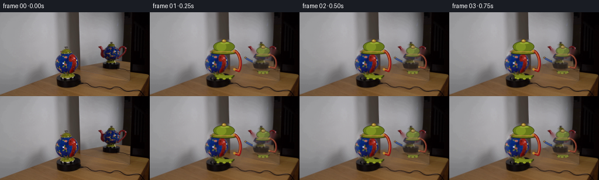
展开代码变化
--- 上一保存版本
+++ 本次保存版本
@@ -318,24 +318,29 @@
bottom = geom.body_bottom - geom.height * 0.20
mid = (top + bottom) * 0.5
p0 = _radial_projection(geom, theta, 0.67, top, s)
- p1 = _radial_projection(geom, theta, geom.handle_bulge * 0.92, top - geom.height * 0.05, s)
- p2 = _radial_projection(geom, theta, geom.handle_bulge, mid, s)
- p3 = _radial_projection(geom, theta, geom.handle_bulge * 0.92, bottom + geom.height * 0.05, s)
- p4 = _radial_projection(geom, theta, 0.68, bottom, s)
- pts = _bezier([p0, p1, p2, p3]) + _bezier([p3, p3, p4, p4])[1:]
+ p1 = _radial_projection(geom, theta, geom.handle_bulge, top - geom.height * 0.04, s)
+ p2 = _radial_projection(geom, theta, geom.handle_bulge, bottom + geom.height * 0.04, s)
+ p3 = _radial_projection(geom, theta, 0.68, bottom, s)
+ pts = _bezier([p0, p1, p2, p3], steps=32)
+ depth = math.cos(theta)
+ shade = 0.68 + 0.32 * max(0.0, depth)
+ outline = tuple(round(v * shade) for v in (55, 39, 10, 255))
+ fill = tuple(round(v * shade) for v in (151, 24, 27, 255))
+ highlight = tuple(round(v * shade) for v in (198, 157, 67, 255))
width = 4.4 * geom.tube_scale * s
_draw_tube(
draw,
pts,
width,
- (55, 39, 10, 255),
- (151, 24, 27, 255),
- (198, 157, 67, 255),
- )
- for point in (pts[1], pts[-2]):
+ outline,
+ fill,
+ highlight,
+ )
+ for point in (pts[2], pts[-3]):
x, y = point
r = 2.1 * geom.tube_scale * s
- draw.ellipse((x - r, y - r, x + r, y + r), fill=(185, 136, 47, 255))
+ gold = tuple(round(v * shade) for v in (185, 136, 47, 255))
+ draw.ellipse((x - r, y - r, x + r, y + r), fill=gold)
def _draw_lid(
@@ -452,13 +457,13 @@
pil = _to_pil(canvas)
draw = ImageDraw.Draw(pil, "RGBA")
_draw_spout(draw, geom, rotation)
+ _draw_handle(draw, geom, rotation)
_draw_foot(draw, geom, rotation)
canvas = _from_pil(pil)
_paint_body(canvas, texture, geom, rotation, layer_alpha)
pil = _to_pil(canvas)
draw = ImageDraw.Draw(pil, "RGBA")
_draw_lid(draw, geom, rotation)
- _draw_handle(draw, geom, rotation)
result = _from_pil(pil)
if layer_alpha < 1.0:
result[..., 3] = (result[..., 3].astype(np.float32) * layer_alpha).astype(np.uint8)
@@ -516,7 +521,7 @@
for index in range(1, FRAME_COUNT):
u = index / (FRAME_COUNT - 1)
eased = 0.10 * u + 0.90 * (0.5 - 0.5 * math.cos(math.pi * u))
- actual_rotation = math.radians(82.0) * eased
+ actual_rotation = -math.radians(82.0) * eased
reflection_rotation = -actual_rotation
canvas = base.copy()
候选 04播放与检查图

可观测工具轨迹
实际执行的命令与返回图片。
命令 1exit 0
/bin/bash -c "pwd && rg --files -g '"'!*'"\\.git*' | sed -n '1,200p'"
命令 2exit 0
/bin/bash -c 'cat prompt.txt'
命令 3exit 0
/bin/bash -c 'cat GENERATION_RULES.md'
命令 4exit 0
/bin/bash -c 'git status --short && file first_frame.png && identify first_frame.png 2>/dev/null || true'
命令 5exit 0
/bin/bash -c "sed -n '1,240p' artifact_io.py"
命令 6exit 0
/bin/bash -c "sed -n '1,240p' player_template.html"
命令 7exit 0
/bin/bash -c "python - <<'PY'
from PIL import Image
im=Image.open('first_frame.png')
print(im.mode, im.size)
print(im.getpixel((0,0)), im.getpixel((128,72)))
PY"命令 8exit 0
/bin/bash -c "python - <<'PY'
from PIL import Image
im=Image.open('first_frame.png')
im.crop((70,45,235,144)).resize((660,396)).save('.tmp/crop.png')
PY"命令 9exit 0
/bin/bash -c "python - <<'PY'
from PIL import Image
im=Image.open('first_frame.png')
for name,box in [('fg',(92,42,163,135)),('mirror',(157,48,231,113)),('body',(98,61,157,113)),('lid',(107,45,151,71))]:
im.crop(box).resize(((box[2]-box[0])*8,(box[3]-box[1])*8)).save(f'.tmp/{name}.png')
PY"命令 10exit 0
/bin/bash -c "python - <<'PY'
from PIL import Image
im=Image.open('first_frame.png')
# color stats around scene for segmentation aid
import numpy as np
a=np.asarray(im)
for y in range(40,140,10):
print(y, [(x,tuple(a[y,x])) for x in range(90,241,15)])
PY"命令 11exit 0
/bin/bash -c "python - <<'PY'
from PIL import Image,ImageDraw,ImageFont
im=Image.open('first_frame.png').crop((88,38,238,128)).resize((900,540),Image.Resampling.NEAREST)
d=ImageDraw.Draw(im)
for x in range(88,239,10):
xx=(x-88)*6
d.line([(xx,0),(xx,540)],fill=(255,255,0),width=1)
d.text((xx+2,2),str(x),fill=(255,255,0))
for y in range(38,129,10):
yy=(y-38)*6
d.line([(0,yy),(900,yy)],fill=(0,255,255),width=1)
d.text((2,yy+1),str(y),fill=(0,255,255))
im.save('.tmp/grid.png')
PY"命令 12exit 0
/bin/bash -c "python - <<'PY'
mods=['numpy','PIL','cv2','scipy','skimage','imageio','ffmpeg']
for m in mods:
try:
x=__import__(m)
print(m,'ok',getattr(x,'__version__',''))
except Exception as e: print(m,'no',e)
PY
which ffmpeg || true"命令 13exit 0
/bin/bash -c "ls -la && find . -maxdepth 2 -type f -printf '%p %s bytes\\n' | sort"
命令 14exit 0
/bin/bash -c "python - <<'PY'
from PIL import Image
im=Image.open('first_frame.png')
im.crop((88,35,238,140)).resize((1200,840),Image.Resampling.LANCZOS).save('.tmp/grid_big.png')
PY"命令 15exit 1
/bin/bash -c 'python generate.py'
命令 16exit 1
/bin/bash -c 'python generate.py'
命令 17exit 1
/bin/bash -c 'python generate.py'
命令 18exit 1
/bin/bash -c 'python generate.py'
命令 19exit 0
/bin/bash -c 'python generate.py'
命令 20exit 0
/bin/bash -c "python - <<'PY'
from PIL import Image
im=Image.open('frames/05.png')
im.resize((1024,576),Image.Resampling.NEAREST).save('.tmp/f05_big.png')
PY"命令 21exit 0
/bin/bash -c 'mkdir -p .tmp/candidate_v1 && cp -a frames inspection.png transition_check.png pixels.npz index.html preview.mp4 .tmp/candidate_v1/'
命令 22exit 0
/bin/bash -c 'python generate.py'
命令 23exit 0
/bin/bash -c "python - <<'PY'
from PIL import Image
im=Image.open('frames/10.png')
im.resize((1024,576),Image.Resampling.NEAREST).save('.tmp/f10_big.png')
PY"命令 24exit 0
/bin/bash -c "python - <<'PY'
from PIL import Image
im=Image.open('frames/19.png')
im.resize((1024,576),Image.Resampling.NEAREST).save('.tmp/f19_big.png')
PY"命令 25exit 0
/bin/bash -c 'python generate.py'
命令 26exit 0
/bin/bash -c "python - <<'PY'
from PIL import Image
im=Image.open('frames/19.png')
im.resize((1024,576),Image.Resampling.NEAREST).save('.tmp/f19_v3.png')
im=Image.open('frames/12.png')
im.resize((1024,576),Image.Resampling.NEAREST).save('.tmp/f12_v3.png')
PY"命令 27exit 0
/bin/bash -c 'cmp -s first_frame.png frames/00.png; echo "frame00_png_cmp=$?"; python - <<'"'PY'
from pathlib import Path
import numpy as np
from PIL import Image
z=np.load('pixels.npz')['pixels']
print('pixels', z.shape, z.dtype)
print('frame files', len(list(Path('frames').glob('*.png'))))
a=np.asarray(Image.open('first_frame.png').convert('RGB'))
b=np.asarray(Image.open('frames/00.png').convert('RGB'))
print('frame00_pixels_equal', np.array_equal(a,b))
print('artifact sizes', {p.name:p.stat().st_size for p in [Path('pixels.npz'),Path('index.html'),Path('inspection.png'),Path('transition_check.png'),Path('preview.mp4')]})
PY"命令 28exit 0
/bin/bash -c "python -m py_compile generate.py artifact_io.py && python - <<'PY'
import cv2
cap=cv2.VideoCapture('preview.mp4')
print('mp4_opened',cap.isOpened())
print('mp4_frames',int(cap.get(cv2.CAP_PROP_FRAME_COUNT)))
print('mp4_fps',cap.get(cv2.CAP_PROP_FPS))
print('mp4_size',int(cap.get(cv2.CAP_PROP_FRAME_WIDTH)),int(cap.get(cv2.CAP_PROP_FRAME_HEIGHT)))
cap.release()
PY"命令 29exit 0
/bin/bash -c "python - <<'PY'
import numpy as np
from PIL import Image
ims=[np.asarray(Image.open(f'frames/{i:02d}.png').convert('RGB'),dtype=np.int16) for i in range(20)]
print('frame diffs:', [int(np.abs(ims[i]-ims[i-1]).mean()) for i in range(1,20)])
print('foreground bbox change', np.where(np.abs(ims[0]-ims[-1]).mean(2)>10)[1].min(), np.where(np.abs(ims[0]-ims[-1]).mean(2)>10)[1].max())
PY"命令 30exit 0
/bin/bash -c "python - <<'PY'
from pathlib import Path
import hashlib
for name in ['pixels.npz','index.html','inspection.png','transition_check.png']:
print(name,hashlib.sha256(Path(name).read_bytes()).hexdigest())
PY"命令 31exit 0
/bin/bash -c "python generate.py && python - <<'PY'
from pathlib import Path
import hashlib, numpy as np
from PIL import Image
for name in ['pixels.npz','index.html','inspection.png','transition_check.png']:
print(name,hashlib.sha256(Path(name).read_bytes()).hexdigest())
a=np.asarray(Image.open('first_frame.png').convert('RGB'))
b=np.asarray(Image.open('frames/00.png').convert('RGB'))
print('frame00_equal',np.array_equal(a,b))
print('png_frames',len(list(Path('frames').glob('*.png'))))
PY"视觉工具实际返回图片 1

视觉工具实际返回图片 2
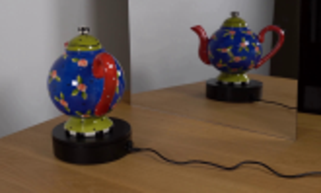
视觉工具实际返回图片 3
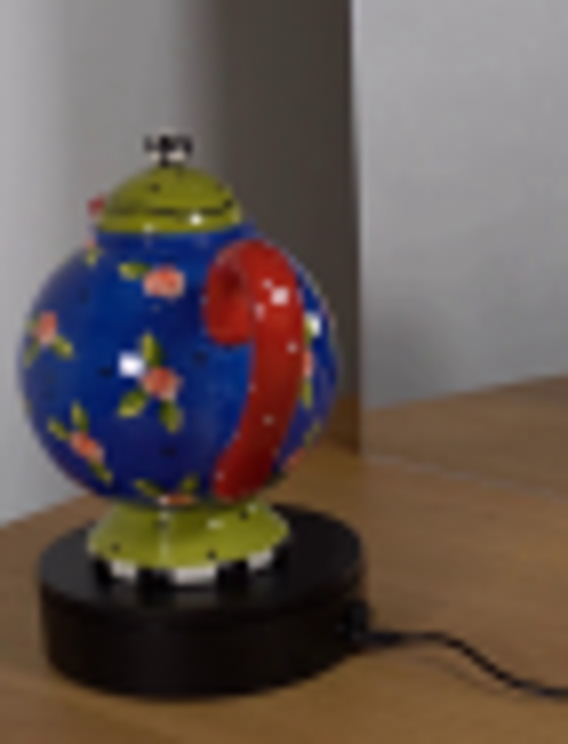
视觉工具实际返回图片 4
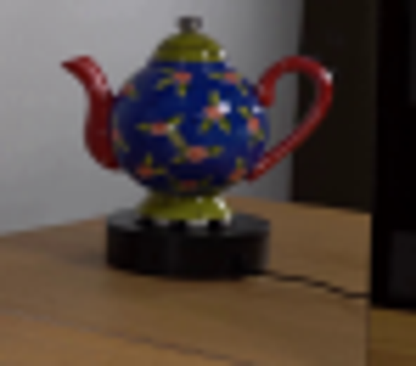
视觉工具实际返回图片 5
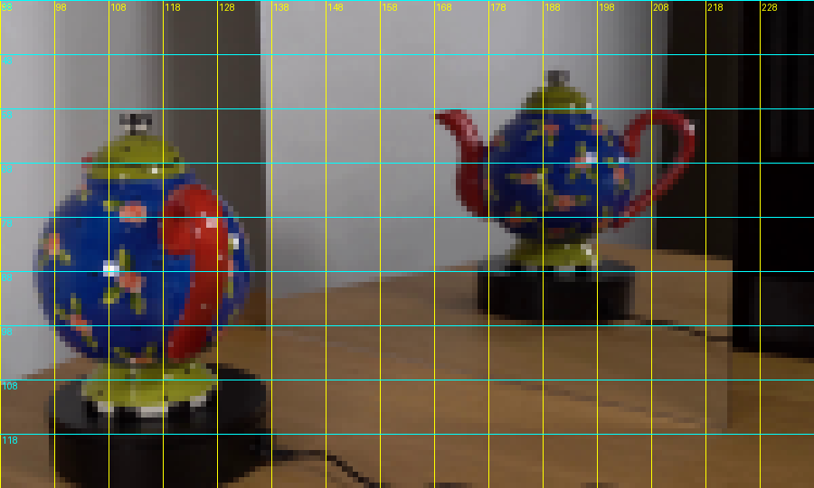
视觉工具实际返回图片 6
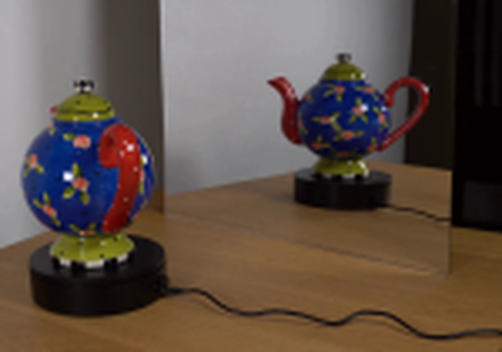
视觉工具实际返回图片 7
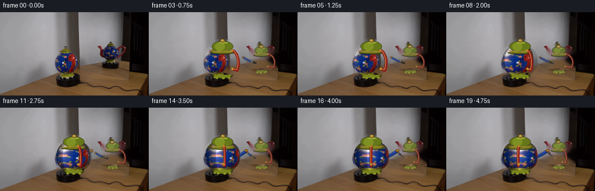
视觉工具实际返回图片 8
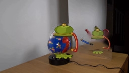
视觉工具实际返回图片 9
视觉工具实际返回图片 10
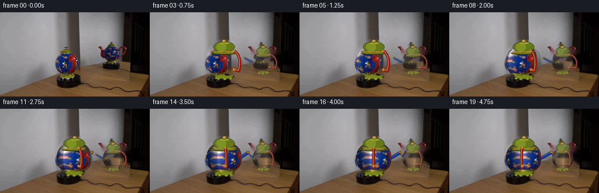
视觉工具实际返回图片 11
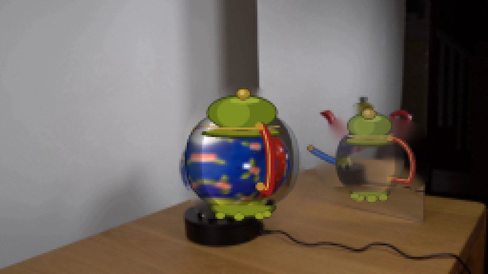
视觉工具实际返回图片 12
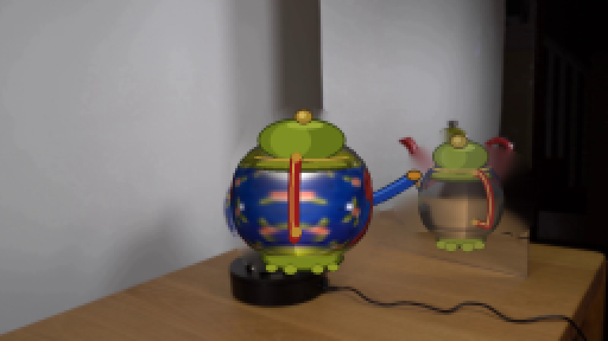
视觉工具实际返回图片 13
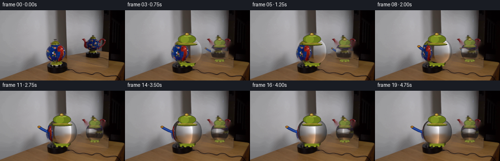
视觉工具实际返回图片 14
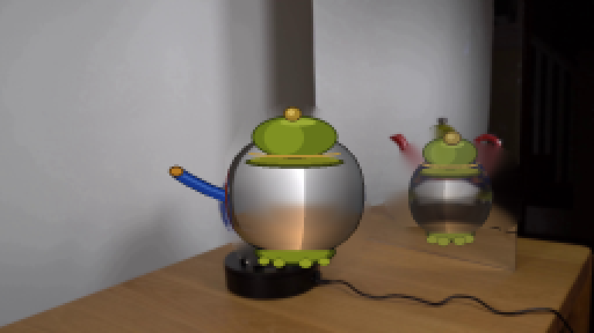
视觉工具实际返回图片 15
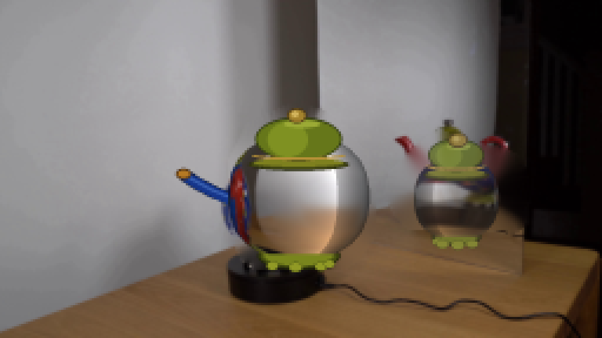
保存候选 4 份；完成命令 31 次；可验证图片返回 15 张。原始 API 响应与完整日志保留在本地。